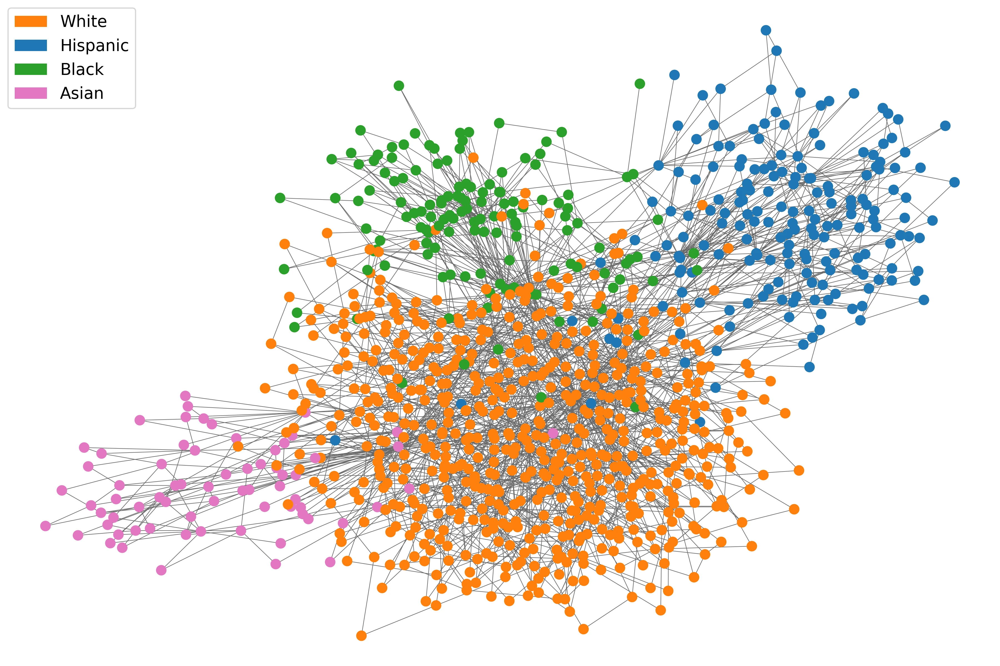

written by Roni Kobrosly on 2022-10-03 | tags: personal updates pydata
Fall is here and you really ought to buy some of those pumpkin pancake/waffle mixes at the store. I'm there for it. I've been thinking a lot recently about data-driven culture and who is responsible for building it and maintaining it in organizations.
Read on... (276 words, approximately 2 minutes reading time)written by Roni Kobrosly on 2022-08-03 | tags: scipy causal inference
I recently had the privilege of giving a talk and tutorial session at SciPy 2022 in Austin. Besides rediscovering how hot central Texas is in the summer (the sun is trying to kill you), I walked away with some useful insights from the audience...
Read on... (140 words, approximately 1 minute reading time)written by Roni Kobrosly on 2022-05-08 | tags: open source
I love Medium and Substack. They're so great that only a non-English word can truly describe them: fantastico. However, not all tech leadership, data, and engineering blogs will let you subscribe and receive email updates on new posts. And some of the best personal blogs out there only drop a new post a few times a year. You're then forced to periodically and manually check these websites for updates. I've got a list of 50+ of these non-subscribable blogs that I care about, and checking in on them sucks. So, I built a tool...
Read on... (174 words, approximately 1 minute reading time)written by Roni Kobrosly on 2022-04-18 | tags: data leadership open source product management data
Like many data folk I'm subscribed to a bunch of weekly data analytics, data science, analytics engineering, and etc. email services. They're roundups of great blog posts, papers, and articles all over the web. Pretty regularly I come across gems in these roundups that give fantastic insights about data leadership, but usually a week later the email is buried under 6 feet of crap in my inbox. No more!
Read on... (124 words, approximately 1 minute reading time)written by Roni Kobrosly on 2022-02-24 | tags: machine learning causal inference
Obesity, as a public health problem, has an enormous amount of "causes": the types of farmed foods we tend to subsidize on a national level, our policies around public transit, the walkability of neighorhoods, the presence of food deserts, our social networks and their attitudes toward obesity, the media, etc etc. All of these complex, interconnected things make it really challenging to perform a causal analysis of potential solutions. I recently came across a great paper that takes a stab at addressing this problem through simulations, and I think the lessons from this are very much applicable to some problems we face in the data industry.
Read on... (742 words, approximately 4 minutes reading time)